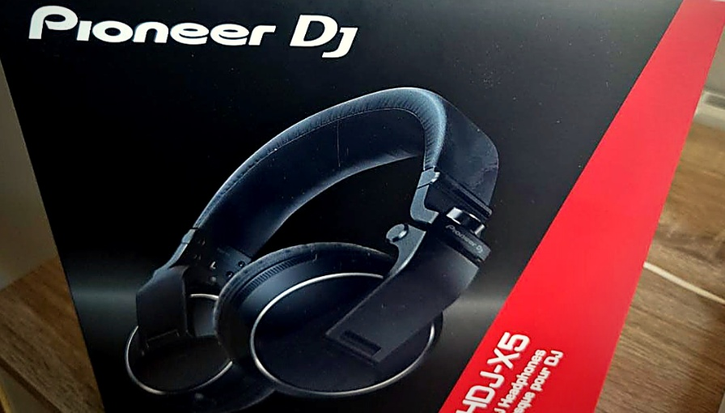
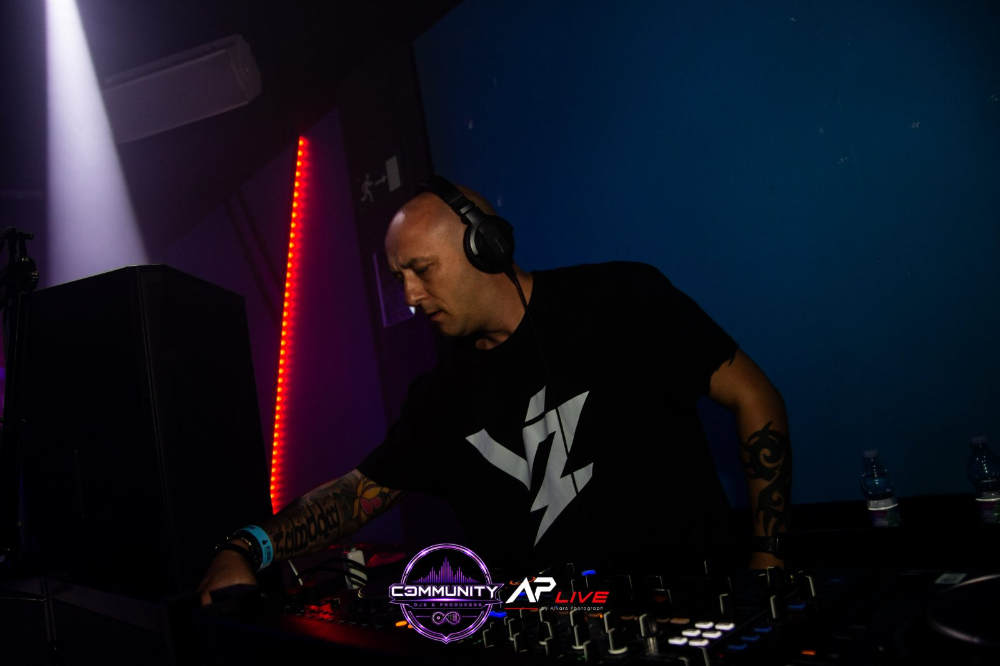
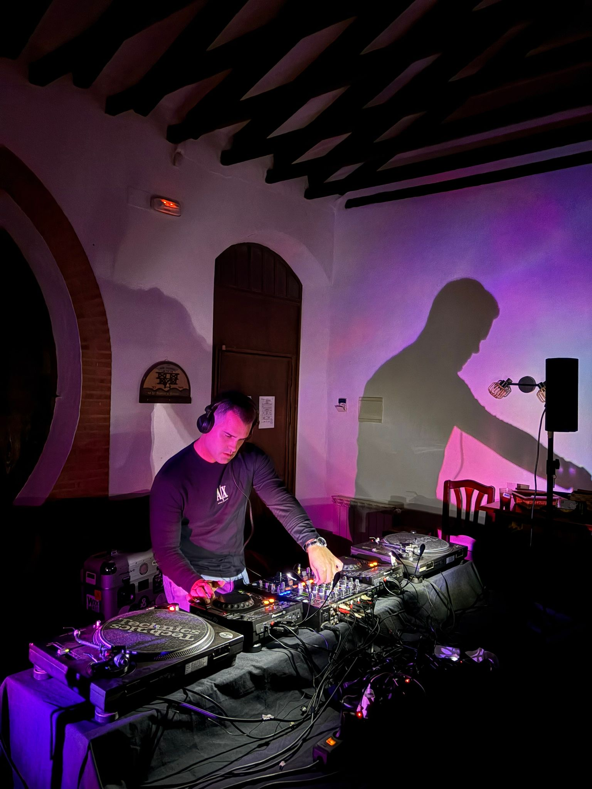
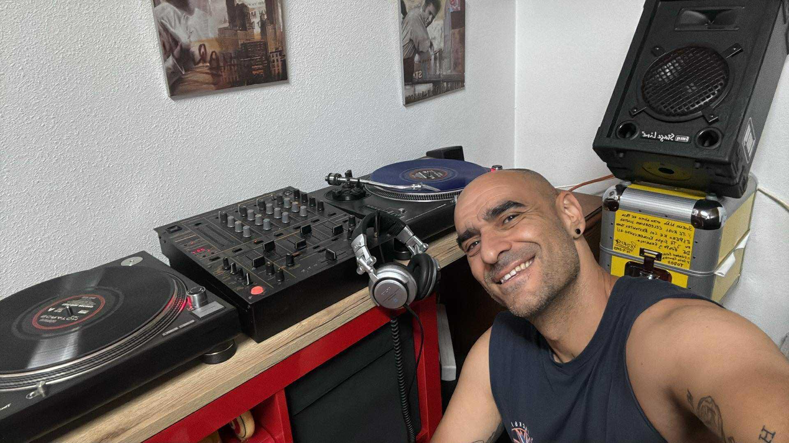

CONCURSO DJ MADRID
EDICIÓN 2026
Ya tenemos ganador

Estos cascos ya tienen dueño.
Desliza →

Estos cascos ya tienen dueño.
Tres semanas de sesiones, votos y mucho movimiento. Lo pusisteis muy difícil.



Vuestros votos los llevaron a la final. Después, el jurado escuchó sus sesiones y eligió.
Técnica de mezcla
Selección musical
Energía y cómo se construye la sesión
Sonido de la grabación
Seguidores en otras redes
Fama o dónde ha pinchado antes
El equipo con el que pincha
Conocer a alguien de XPEAK
Solo la sesión. Cada criterio cuenta lo mismo.
El jurado destacó una sesión cuidada y con un ritmo muy bien llevado, con intercambios de energía que dejan respirar.
Se lleva unos Pioneer DJ HDJ-X5.
Había que elegir a uno y no ha sido fácil. DJ VIZARD, Ruben Trias y todos los que os presentasteis: gracias por dar la cara con vuestra sesión.
Crea tu perfil de DJ en XPEAK con foto, bio y una sesión que te represente, y estate atento a la siguiente convocatoria.